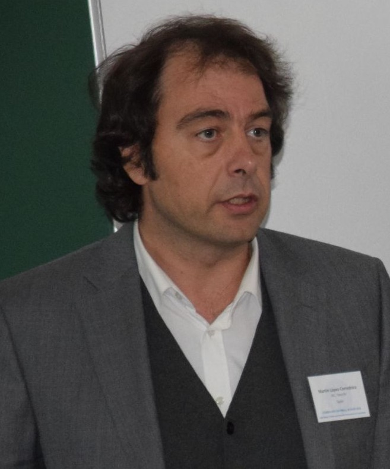
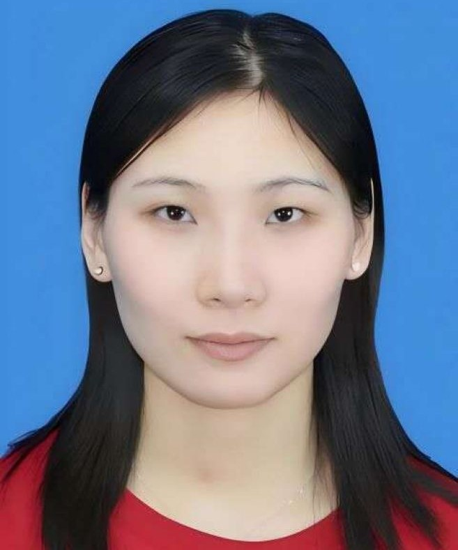

Hai-Feng Wang
Affiliation: Department of Astronomy, China West Normal University (Research Staff; Group Leader of Local Universe and Time-Domain Astronomy Laboratory)
Research Topics: Milky Way and the Local Universe, with particular emphasis on galactic seismology, dynamics, archaeology, interstellar matter, disk systems, galaxy mergers, collisions and the nature of dark matter, using data analysis, modeling, and simulations.

Guan-Yu Wang
Affiliation: Dipartimento di Fisica e Astronomia ``Galileo Galilei", University of Podova (Ph.D. student)
Research Topics: Milky Way halo structure; Stellar streams & substructures; Galactic assembly history; Dynamical evolution.

Peng Yang
Affiliation: China West Normal University (Ph.D. student)
Research Topics: Galactic seismology, dynamics, and disk structure analysis.

Martín López Corredoira
Affiliation: Instituto de Astrofísica de Canarias, Canary Islands, Spain (Staff Researcher)
Research Topics: Milky Way and cosmology.

Qi-Da Li
Affiliation: China West Normal University (Assistant Professor)
Research Topics: Parameter measurement for large sample stars, the stellar initial mass function.
Yong-Jun Jiao
Affiliation: Tsinghua University (Postdoctoral Researcher)
Research Topics: Rotation Curves, Dark matter, Galaxy formation, FAST datasets.

Guo-Jun Cheng
Affiliation: China West Normal University (Master’s student)
Research Topics: Milky Way bulge populations and dynamics.
Yang-Jun Shi
Affiliation: China West Normal University (Ph.D. student)
Research Topics: Near-Field Cosmology; Cosmology; Dark Matter.
Chang-Ping Li
Affiliation: China West Normal University (Master’s student)
Research Topics: Streams; Chemo-Dynamics of the Milky Way Halo; Dark Matter.

Xiao-Peng Liu
Affiliation: Hebei Normal University (Ph.D. student)
Research Topics: Milky Way disk structure and kinematics; thin-disk density distribution and vertical asymmetries; outer-disk rotation curve based on LAMOST stellar tracers.

Yu-Zheng Wang
Affiliation: Hebei Normal University (Master’s student)
Research Topics: Structure and dynamics of the outer disk.
Xiao-Yue Zhou
Affiliation: National Astronomical Observatory of Chinese Academy of Sciences (Ph.D. student)
Research Topics: Disk Warps and Stellar Catalogs.

Gui-Mei Liu
Affiliation: Xinjiang Astronomical Observatory & University of Vienna (Ph.D. student)
Research Topics: Star Clusters and dynamics.

Pei-Bin Chen
Affiliation: China West Normal University (Assistant Professor)
Research Topics: Dwarf galaxy, AGN, Star Formation.
Xiang Luo
Affiliation: China West Normal University (Assistant Professor)
Research Topics: Planetary atmosphere, Stellar activity, Time domain stellar physics.
Yan Jiang
Affiliation: China West Normal University (Assistant Professor)
Research Topics: Disk Galaixies, Star formation, Radio astronomy.
Min Dai
Affiliation: China West Normal University (Assistant Professor)
Research Topics: Red SuperGiants, Stellar catalog, M31 dynamics.
Shi-Qi Zhou
Affiliation: China West Normal University (Assistant Professor)
Research Topics: Pulsars, Milky Way disk.
Yunchuan Xiang
Affiliation: China West Normal University (Assistant Professor)
Research Topics: High Energy astrophysics, Time-Domains astronomy, AGN, Supernovae, Machine Learning.
Qingshun Hu
Affiliation: China West Normal University (Assistant Professor)
Research Topics: Open clusters, Star Clusters Dynamics.
Fan Wang
Affiliation: China West Normal University (Assistant Professor)
Research Topics: Stellar formation history; Moving groups; Milky Way.

Lin Lan
Affiliation: China West Normal University(Assistant Professor)
Research Topics: High Energy Astrophysics; Time-Domain Astronomy